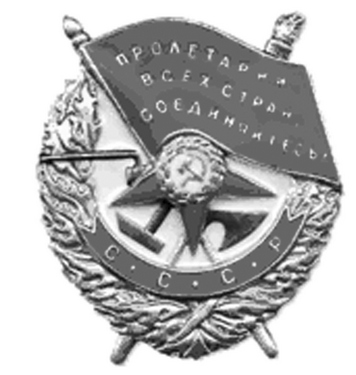

|
ЗА ДОБЛЕСТЬ И МУЖЕСТВО!
В Законодательное Собрание Тверской области пришло письмо из Вологды от члена Российского общества историков-архивистов, сотрудника поискового отряда «Путь воина» В.А. Зайцевой. Вера Алексеевна попросила помощи в установлении мест захоронения троих своих земляков, погибших на тверской земле, прислала копии актов захоронения погибших воинов из состава частей 171 стрелковой дивизии. Кроме того, она сообщила имена шести уроженцев Калининской области, которые в годы войны были награждены высокой правительственной наградой – орденом Красного Знамени, но по какой-то причине эти награды им вручены не были.
Фондом «Жить и Помнить» найдены подтверждения о награждении четырех из этих людей.
Сержант Соловьев Дмитрий Архипович, 1910 года рождения, уроженец дер. Есемово, Ржевского района.
Командир орудия ПТО отдельного противотанкового дивизиона. В наградном листе на сержанта Соловьева Д.А. сказано: «10 февраля 1942 г. под сильным артиллерийским и минометным огнем и наступлением пехоты и танков противника в районе дер. Гончары (Ржевский район), командир орудия проявил мужество и отвагу, его орудие отбило атаку танков и пехоты противника. Подбил два танка противника, чем восстановил положение нашей обороны. Достоин правительственной награды орденом Красного Знамени».
Командующий Калининским фронтом своим приказом № 037 от 16 сентября 1942 г. от имени Президиума Верховного Совета Союза ССР за образцовое выполнение заданий командования на фронте борьбы с немецкими захватчиками и проявленные при этом доблесть и мужество наградил орденом Красного Знамени сержанта Соловьева Дмитрия Архиповича, командира орудия ПТО 185 стрелковой дивизии»
Дмитрий Архипович награжден посмертно. В том бою у дер. Гоначары он погиб. После войны был перезахоронен в братскую могилу в дер. Мончалово Ржевского района.
Партизан – боец партизанского отряда «Деда Корнилова» Соловьев Иван Андреевич, 1914 года рождения, уроженец Молодотудского района Калининской области.
В представлении к награждению командир партизанского отряда написал: «Соловьев И.А. действовал в тылу противника на территории Ржевского, Молодотудского и Оленинского районов. Проявил мужество и храбрость в борьбе с немецкими оккупантами. 23.01.1942 г. при налете на дер. Решетниково лично уничтожил 4-х фашистов, были взяты богатые трофеи. 03.02.1942 г. при дер. Упыри тов. Соловьев уничтожил 6 фашистов, а также бывал в разведке глубоко в тылу противника и приносил очень ценные сведения.
Ходатайствую о представлении к правительственной награде ордену Красного Знамени».
Приказом Командующего Калининским фронтом № 0384 от 7 октября 1942 г. Соловьев И.А. за проявленные доблесть и мужество награжден орденом Красного Знамени.
По нашим сведениям Иван Андреевич так же геройски воевал и дальше. Ему было присвоено офицерское звание, и он был назначен на должность командира пулеметного взвода 767 стрелкового полка 228 стрелковой дивизии. Лейтенант Соловьев И.А. погиб за три дня до Победы - 6 мая 1945 г. на территории Чехословакии. В приказе ГУК НКО от 20.07.1945 г., которым его исключили из списков Красной Армии записано, что в дер. Торутино Молодурского р-на Калининской области жила сестра героя Барченкова Татьяна Андреевна. Память о Соловьеве И.А. увековечена в Книге Памяти Тверской области, но в записи он почему-то проходит как рядовой.
Старший лейтенант Соловьев Семен Александрович, 1912 года рождения, уроженец д. Старая Брусовского (Удомельского) района Калининской области.
Участвовал в боях на КВЖД, в освобождении западных областей Украины и Белоруссии, советско-финской войне. На фронтах Великой Отечественной войны с августа 1941 г. Командир 5 стрелковой роты 1021 стрелкового полка 307 стрелковой дивизии.
В реляции наградного листа записано: «Во время боев с 26 по 30 января проявил себя опытным командиром и личную отвагу по прорыву обороны противника на высоте 224,4 и под его руководством было обеспечено овладение населенными пунктами Нижняя Слободка, Алексеевка. Рота, руководимая лейтенантом Соловьевым, первой ворвалась и овладела населенным пунктом Валово, уничтожив сопротивляющегося противника.
В боях по овладению городом Касторное проявил смелость и отвагу. Овладел городом Касторное и лично в уличных боях истребил 50 немцев, захватил с группой бойцов 70 пленных.
Достоин правительственной награды – ордена Красного Знамени».
Этим орденом лейтенант Соловьев С.А. был награжден приказом Командующего Брянским фронтом в феврале 1943 года. 13 февраля 1943 года погиб в бою у дер. Озерки Орловской области. Похоронен в братской могиле в дер. Кривцово Болховского района Орловской области.
К сожалению, две записи о Семене Александровиче в Книги Памяти Тверской области не достоверны.
Капитан Сидоров Михаил Александрович, 1922 года рождения, уроженец Удомельского района Калининской области.
О том, что он был награжден орденом Красного Знамени документов найти не удалось. Но точно установлено, что заместитель командира батальона 1067 стрелкового полка 311 стрелковой дивизии капитан Сидоров М.А. представлялся к этой награде, однако наградили его орденом Красной Звезды.
Из наградного листа: «Товарищ Сидоров в боях под Поречьем с боем первым ворвался на высоту 40,4, выбил из траншей немцев. Не смотря на яростные контратаки противника, закрепился на высоте и держался до конца, отбив несколько вражеских контратак. До батальона немцев с танками пошли в контратаку против батальона, с которым держал высоту тов. Сидоров. Подпустив немцев вплотную, он отразил контратаку гранатами, лично сам Сидоров уничтожил до 80 гитлеровцев. Три гранаты, брошенные немцами, тов. Сидоров поймал на лету и бросил обратно в фашистов.
Будучи контуженым, потеряв речь, не смотря на категорическое приказание уйти с поля боя, тов. Сидоров не ушел и продолжал помогать своему командиру батальона выполнять боевую задачу.
Перед началом Киришской операции тов. Сидоров временно командовал усиленной стрелковой ротой, вместе с ней он ворвался на передний край немцев, уничтожил два взвода вместе с его гарнизонами и захватил вражеский пулемет. Тов. Сидоров разведал огневую систему противника, что впоследствии обеспечило полку успешный прорыв обороны немцев.
В операции за населенные пункты Посадниково и Ларионов остров тов. Сидоров первым вклинивается в заградотряды противника, уничтожает его живую силу и, умело управляя огнем и маневром, успешно продвигается вперед.
Своей исключительной храбростью, отвагой и мужеством тов. Сидоров во всех операциях, проводимых дивизией, показал боевое умение, любовь и преданность Родине».
Орденом Красной Звезды награжден приказом Командующего 54 Армией № 0100-н от 8 октября 1943 г.
Еще в феврале 1943 г. за умелую организацию боя по прорыву обороны противника у дер. Смердыня Михаилу Александровичу была вручена медаль «За отвагу».
Капитан Сидоров М.А. погиб 20 июля 1944 года на территории Латвии, там же и похоронен.
Если кому-то из читателей нашей газеты известно что-либо о родственниках этих людей, просим сообщить. При наличии близких родственников есть возможность возбудить ходатайство о передаче боевых наград героев их семьям.
На фото: Орден Красного Знамени (орден Боевого Красного Знамени, орден «Красное знамя») - первый из советских орденов. Был учреждён 16 сентября 1918 г. для награждения за особую храбрость, самоотверженность и мужество, проявленные при защите социалистического Отечества. |